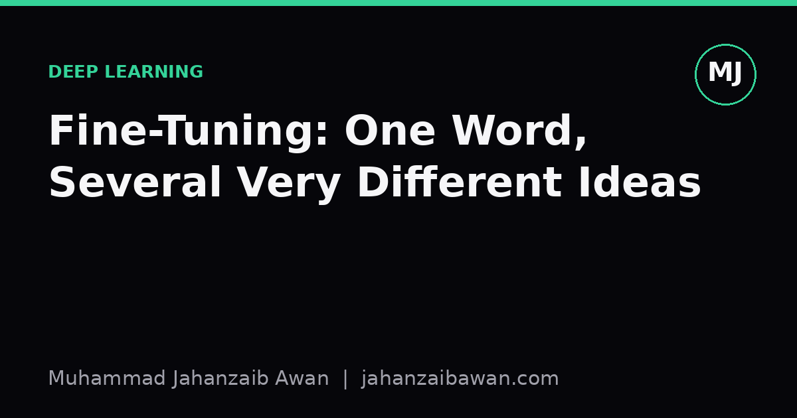

Fine-Tuning: One Word, Several Very Different Ideas
From tuning a violin to updating billions of parameters, fine-tuning means adjusting something that already works. In machine learning it has a precise and consequential meaning that's worth getting right.

A word borrowed from everywhere
Fine-tuning is one of those terms that sounds self-explanatory precisely because it already means something outside machine learning. You fine-tune a carburettor by making small mechanical adjustments to an engine that already runs. You fine-tune a musical instrument by nudging strings that are already roughly in the right key. You fine-tune a policy by adjusting parameters within a system that already broadly works. In every ordinary sense, fine-tuning implies a small, careful correction applied to something functional, not a rebuild from scratch.
That everyday meaning quietly shapes how people think about the term when it turns up in machine learning, and this is where I think a lot of confusion creeps in. In ML, fine-tuning is sometimes a small correction and sometimes something much closer to a rebuild, and the word alone does not tell you which. Two papers can both say 'we fine-tuned the model' and mean things that differ by several orders of magnitude in how many parameters actually moved.
What fine-tuning means in ML, precisely
In machine learning, fine-tuning refers to taking a model that has already been trained on one task or dataset, and continuing training on a new, usually smaller, dataset for a related task. The pretrained model arrives with weights that already encode useful structure: for a language model, that might be grammar, world knowledge, and general reasoning patterns; for a vision model, it might be edges, textures, and object parts. Fine-tuning adjusts those weights so the model performs well on your specific problem, without starting from random initialisation.
The key word is continuing. This is what distinguishes fine-tuning from training from scratch. If I have a model pretrained on a huge general corpus and I then train it further on, say, five thousand labelled customer support tickets, I am fine-tuning. If I trained a fresh model on just those five thousand tickets with no pretraining at all, I would almost certainly get worse results, because five thousand examples is nowhere near enough to learn language structure from nothing.
But 'continuing training' hides a huge range of practical choices, and this is where the word stops being precise. You could fine-tune every single parameter in the model, which is called full fine-tuning. You could freeze most of the network and only update the final classification layer, sometimes called a linear probe, which barely deserves the name fine-tuning at all in spirit, even though it is technically continued training. You could use parameter-efficient methods that insert small trainable modules into an otherwise frozen model, updating a tiny fraction of the total weights while leaving the rest untouched. All three get called fine-tuning in casual conversation, and all three behave very differently.
The differences are not cosmetic. Full fine-tuning on a small dataset risks catastrophic forgetting, where the model overwrites the general knowledge it learned during pretraining in order to fit the new, narrow data. Imagine a model pretrained on broad text and then fully fine-tuned on ten thousand medical abstracts: if the learning rate is too high or training runs too long, the model can become excellent at medical phrasing while quietly losing its ability to write coherently about anything else. Parameter-efficient approaches are often more resistant to this because most of the original weights simply cannot move.

A worked example: why the details change the outcome
Suppose I have a pretrained image classifier with around twenty five million parameters, originally trained on a broad set of natural images, and I want to adapt it to classify a hundred species of local birds from a dataset of only two thousand photographs. Two thousand images is a small dataset for training a model of that size from scratch: you would expect severe overfitting, with the model memorising training photos rather than learning general bird features.
If I freeze the entire network except the final layer, I am relying entirely on the features the model already learned from natural images: edges, textures, rough shapes. This trains fast and resists overfitting, because only a few thousand parameters are being adjusted, but it caps my accuracy at whatever the frozen features can support. If bird species distinctions rely on subtle beak shapes the original features never had to represent well, a linear probe may plateau at a mediocre accuracy.
If instead I fully fine-tune all twenty five million parameters on those same two thousand images, using a low learning rate and few epochs, I let the whole network adapt, including the earlier layers that detect textures and shapes. This can push accuracy higher because the features themselves become more bird-specific. But push the learning rate too high, or train for too many epochs, and the same two thousand images that were an asset become a liability: the model overfits hard, validation accuracy climbs then falls, and the gap between training and validation performance widens exactly the way it does with any small-data overfitting problem.
A middle path, inserting small trainable adapters into a handful of layers while freezing the rest, often gets close to full fine-tuning's accuracy while touching a fraction of the parameters and training in a fraction of the time. Which option is best depends on data size, how different the new task is from the original training distribution, and how much compute and time you have. There is no universally correct answer, which is exactly why the single word 'fine-tuning' is doing too much work if you leave it unqualified.
The practical takeaway
When you read or write the word fine-tuning, it is worth pausing to ask which of these things is actually meant: full parameter updates, a frozen backbone with a new head, or a parameter-efficient method touching a small subset of weights. The everyday sense of the word, a small careful adjustment, only really matches the last two. Full fine-tuning is often closer to a substantial retraining, with all the overfitting and forgetting risks that implies.
My own rule of thumb is to always report exactly what was frozen, what was trained, the learning rate, and the number of epochs, whenever I describe a fine-tuning setup. It costs a sentence or two and it removes an entire category of ambiguity for anyone trying to reproduce or trust the result. Given how much the outcome depends on these choices, that specificity is not pedantry, it is the difference between a claim that means something and one that sounds like it does.